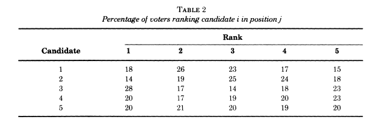
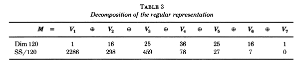
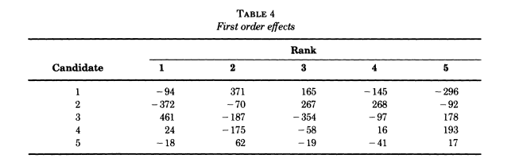
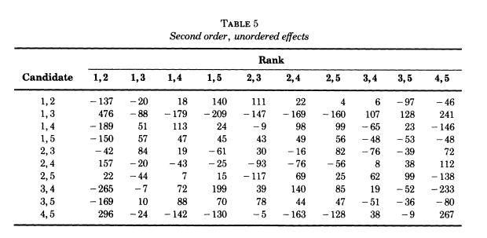

character table of \(S_5\)
Let’s use GAP to find the character table of \(S_5\).
gap> G:=SymmetricGroup(5);
Sym( [ 1 .. 5 ] )
gap> tab:=CharacterTable(G);
CharacterTable( Sym( [ 1 .. 5 ] ) )
gap> Display(tab);
CT1
2 3 2 3 1 1 2 .
3 1 1 . 1 1 . .
5 1 . . . . . 1
1a 2a 2b 3a 6a 4a 5a
2P 1a 1a 1a 3a 3a 2b 5a
3P 1a 2a 2b 1a 2a 4a 5a
5P 1a 2a 2b 3a 6a 4a 1a
X.1 1 -1 1 1 -1 -1 1
X.2 4 -2 . 1 1 . -1
X.3 5 -1 1 -1 -1 1 .
X.4 6 . -2 . . . 1
X.5 5 1 1 -1 1 -1 .
X.6 4 2 . 1 -1 . -1
X.7 1 1 1 1 1 1 1
gap> /Course-Assets/Images/Diaconis example – survey data
This data is taken from the paper [@/course-assets/images/diaconisGeneralizationSpectralAnalysis1989]
It describes 5,738 completed ballots rank-ordering 5 candidates.
View a rank-ordered ballot as an element of the symmetric group \(S_5\); we want to study the frequency function \(f\).
first ranking table

the regular representation

This diagram shows the decomposition of the regular representation into isotypic components.
Be careful: the notation /Course-Assets/Images/Diaconis is using here does not match that
used by GAP above. For example, the representation /Course-Assets/Images/Diaconis writes
as \(V_3\) is the isotypic component determined by the irreducible
representation X.5 in GAP.
The second row reflects the decomposition of the frequency function \(f\). Namely, write \[f = \sum_{i=1}^7 f_i \quad \text{with $f_i \in V_i$}.\]
The second row entries are the “sums of squares” \(\langle f_i,f_i \rangle\).
Remember that we can compute the \(f_i\) using the idempotents in \(\mathbb{C}[G]\).
For example,
\[f_1 = \dfrac{1}{5!} \sum_{\sigma \in S_5} \sigma.f\]
More generally, if \(\chi_i\) denotes the character of the irreducible representation \(L_i\) with \(V_i = \mathbb{C}[G]_{(L_i)}\) then \[f_i = \dfrac{1}{5!} \sum_{\sigma \in S_5} \chi_i(\sigma^{-1}) \sigma.f\]
Note that \(\langle f_3,f_3 \rangle = 459\) is relatively large (ignoring \(\langle f_1,f_1 \rangle\) since \(f_1\) is trivial).
normalizing the first-order data

THe \(i,j\) entry in this table is the number of votes ranking candidate \(i\) in the \(j\)-th position, minus the sample size over 5.
In particular, rows and columns sum to 0.
This normalization can also be achieved as follows:
Let \(f_2\) be the projection on \(V_2\), and consider the functions \[\sigma \mapsto \delta_{i,\sigma(j)}.\]
The \(i,j\) entry of the preceding table is \(\langle f_2 , \delta_{i,\sigma(j)} \rangle\)

Intrepretation in this last table:
Compute the projection \(f_3\) of \(f\) into the component \(V_3\) of \(M = \mathbb{C}[S_5]\).
Now, consider the easily understood functions \[\sigma \mapsto \delta_{\{i,i'\},\{\sigma(j),\sigma(j')\}}\] in \(\mathbb{C}[S_5]\) for distinct \(i,i'\) and distinct \(j,j'\).
The space of these functions is a 100 dimensional subspace of \(W\) \(\mathbb{C}[G]\).
The entries in the table are the inner products \[\langle f_3 , \delta_{\{i,i'\},\{\sigma(j),\sigma(j')\}} \rangle\]
Summary observations
The data were to elect a president for the American Psychological
Association. Candidates 1 and 3 were clinicians while candidates 4
and 5 were academicians, two groups within the association with
somewhat divergent perspectives.
In the second-order table, we see a preference for candidates 1 & 3 witnessed by the entry 376 corresponding to the entry for candidates \(\{1,3\}\) and ranks \(\{1,2\}\).
And we see a (slightly smaller) preference for candidates 4 and 5 witnessed by the entry 296 corresponding to the entry for candidates \(\{4,5\}\) and ranks \(\{1,2\}\).